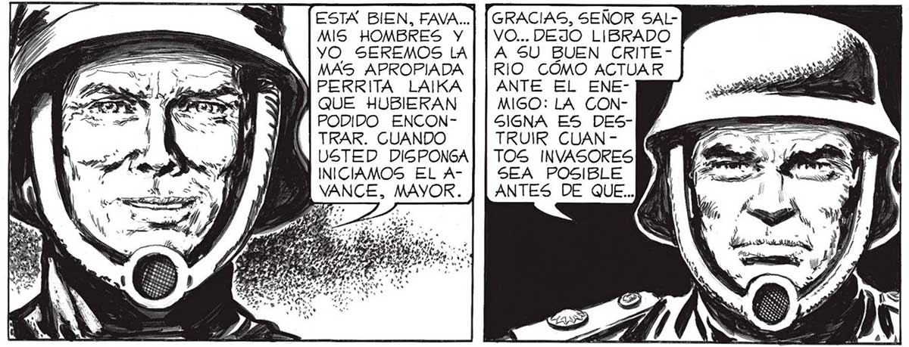
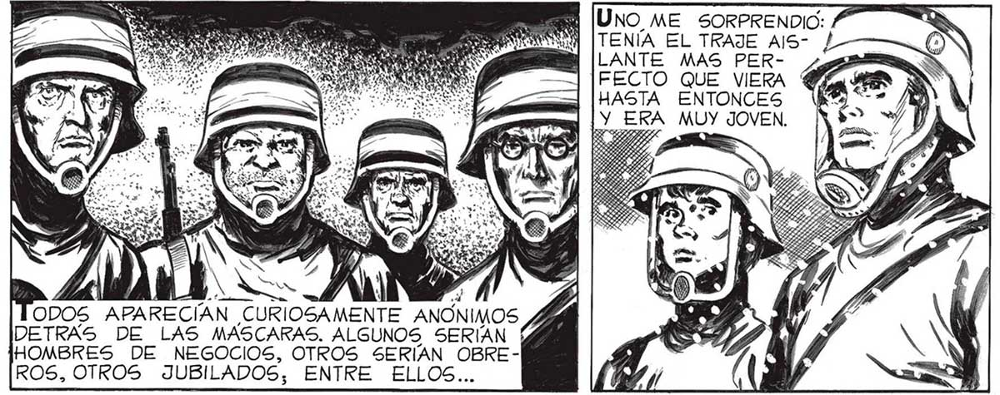
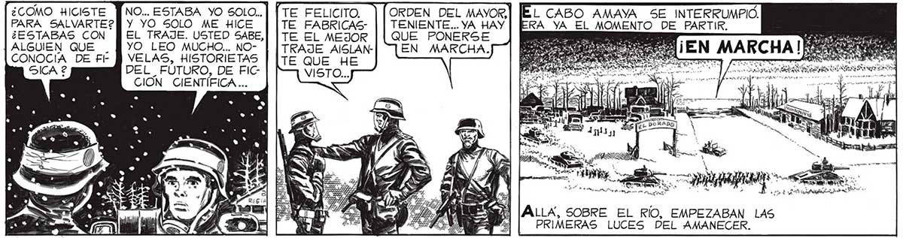

87 . Y — Y [EsTx sien, rava..] [GRACIAS, SEÑOR SALME IMPRESIONO 9) Y | MIS HOMBRES Y | | VO... DEJO LIBRADO , YO SEREMOS LA|| A S5U BUEN CRITEEL CANSANCIO, LA DESESPE- MAS APROPIADA | | RIO CÓMO ACTUAR RANZA DE ' /) Al rt PERRITA LAJKA | | ANTE EL ENEFAVALLI, Sl El, LS Á QUE HUBIERAN MIGO: LA CGONTAN LÚCIDO ; d PODIDO ENCON- | |SIGNA ES DESSIEMPRE, MA WIN TRAR. CUANDO TRUIR CUANSE ENTREGABA > 38 2s J USTED DIGPONGA| | TOS INVASORES AL ABAJIMIEN- PARADOS INICIAMOS EL A- | | SEA POSIBLE TO,¿ QUÉ NOS VANCE, MAYOR. ANTES DE QUE... QUEDABA A NOSOTROS 2 NO SÉ DE DÓNDE SAQUÉ FUERZAS PARA SONREIR. SE INTERRUMPIO. YO TERMINÉ E ELA » a | Xi N [UNO ME SORPRENDIO: ... AMAYA HABIA LS A , Ñ $ DAN Es CONCENTRADO ! ] e NON [TENÍA EL TRAJE AIS- ¿ A TODOS LOS ES DS MILICIANOS; LES HABÍA DICHO YA QUE EL ATAQUE EMPEZABA. Y TODOS ME AGUARDABAN TENSOS, ENDURECIDOS LOS ROSTROS POR LA CERTEZA DE LA MUER TE PROXIMA. ¿COMO TE LLA- ] [Mi NOMBRE ES ALBER-| MAS? ¿Y QUÉ TO, ALBERTO FRANCO | ERES? ¿ESTUDIAN-] Y 50Y FUNDIDOR. ROS, OTROS JUBILADOS, ENTRE ELLOS... ¿COMO HICISTE NO... ESTABA YO SOLO... | [TE FELICITO. ] [ORDEN DEL MAYOR, L PARA SALVARTE?]] Y YO SOLO ME HICE TE FABRICAS: | | TENIENTE... YA HAY ] AS LUCES DE ¿ESTABAS CON PEL TRAJE. USTED SABE, | | Te EL MEJOR || QUE PONERSE 0 ] AQUEL AMAALGUIEN QUE . YO LEO MUCHO... NO- EN MARCHA. ] OÍ Y NECER, QUE CONOCÍA DE FÉ P VELAS, HISTORIETAS ROS — 7 RR HABRÍAN DE DEL_ FÚTURO, DE FIC- de > HS YA a hStoina ILUMINAR LO CIÓN CIENTÍFICA... a E O a HISTORIADOR, RESUMIO. EN SU ANOTADOR BAJO EL TÍTULO DE : “PRIMER _COMBATE DE LA AVENIDA _GENERAL PAZ” ALLA, SOBRE EL RÍO, EMPEZABAN LAS PRIMERAS LUCES DEL AMANECER.


